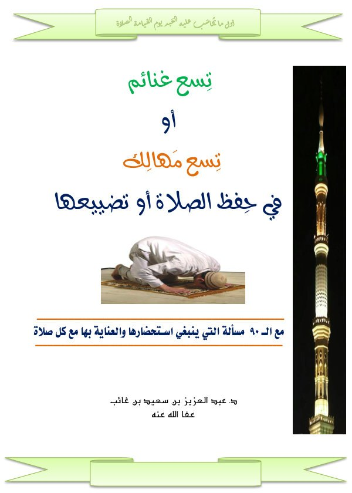

تسع غنائم أو تسع مهالك في حفظ الصلاة أو تضييعها
د. عبد العزيز بن سعيد بن غائب
- المؤلف
- د. عبد العزيز بن سعيد بن غائب
- التصنيف
- بحوث فقهية وأصولية
- عدد الصفحات
- ٨٤ صفحة
- تاريخ الإضافة
مؤلفات أبي عمر د. عبد العزيز بن سعيد بن غائب ‹ بحوث فقهية وأصولية

د. عبد العزيز بن سعيد بن غائب